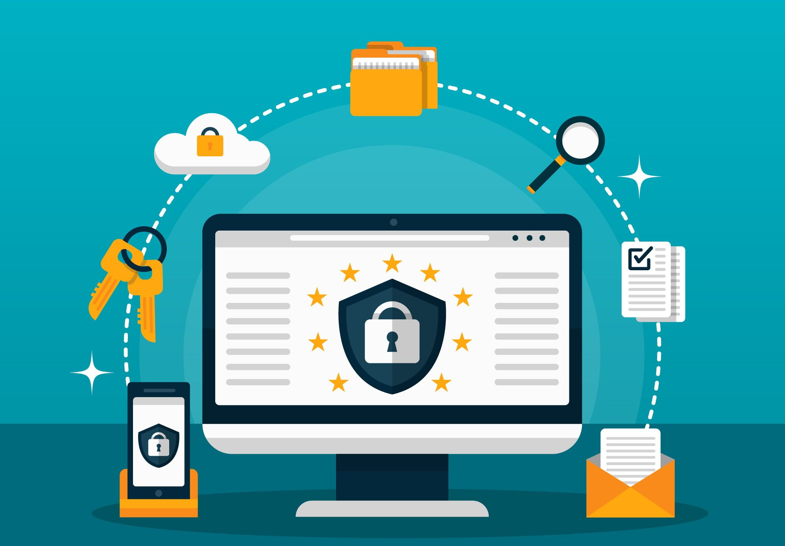
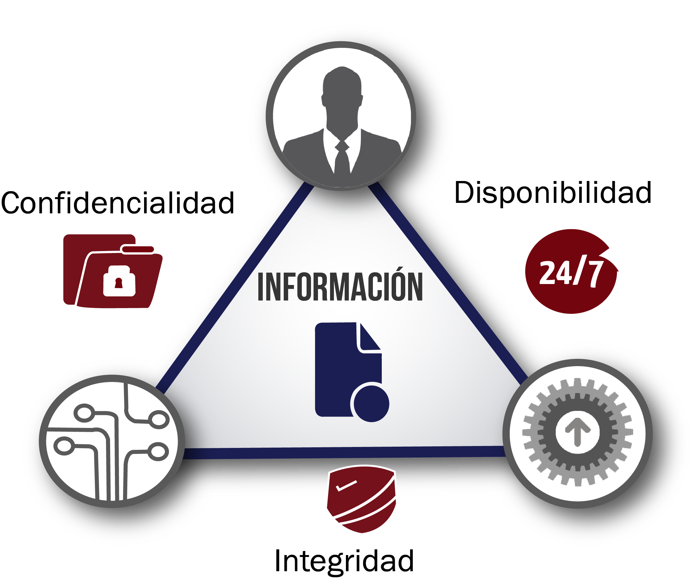

Protección de Datos Personales
Proteger tus datos personales es importante en un mundo digital cada vez más interconectado. Para comenzar, te presentamos algunas estrategias para mantener tu información segura.
1. Utiliza cifrado de extremo a extremo: Cuando compartas información sensible, como datos bancarios o de tarjetas de crédito, opta por plataformas y servicios que utilicen cifrado de extremo a extremo. Esto garantiza que tus datos estén protegidos durante la transferencia y almacenamiento.
2. Emplea autenticación biométrica: Además de las contraseñas, considera la autenticación biométrica, como el reconocimiento facial o la huella dactilar, para acceder a tus dispositivos y cuentas. Estos métodos añaden una capa adicional de seguridad que es difícil de replicar.

3. Monitoriza tus cuentas regularmente: Revisa periódicamente el historial de actividad de tus cuentas en línea para detectar cualquier actividad sospechosa. Presta atención a los accesos no autorizados o a cambios en la información de la cuenta que no realizaste.
4. Mantén actualizados tus dispositivos: Instala regularmente actualizaciones de seguridad en tus dispositivos y aplicaciones. Las actualizaciones suelen incluir parches que corrigen vulnerabilidades conocidas y mejoran la protección contra amenazas cibernéticas.
5. Utiliza servicios de almacenamiento en la nube seguro: Almacena tus archivos importantes en servicios de almacenamiento en la nube que ofrezcan cifrado robusto y medidas de seguridad avanzadas. Esto garantizará que tus datos estén protegidos incluso en caso de pérdida o robo de dispositivos.
Sigue estos consejos para proteger tus datos personales y mantener tus cuentas seguras. Recuerda que la seguridad de tus datos y tu identidad en línea depende en gran medida de tus prácticas de gestión de información.